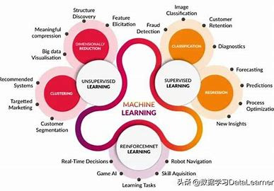

机器学习算法类型
监督学习
监督学习是一种机器学习方法，通过标记数据进行训练，以预测未知数据。在监督学习中，模型会学习输入数据与相应输出标签之间的映射关系。这种学习方式在许多领域都有广泛应用，例如图像分类、语音识别和自然语言处理等。
- 分类算法是监督学习中的一种重要类型，用于将数据分为不同的类别。常见的分类算法包括决策树、支持向量机、朴素贝叶斯等。这些算法通过分析数据的特征，将其划分到不同的类别中。
- 回归分析是另一种常见的监督学习方法，用于预测连续的数值输出。回归分析可以帮助我们理解变量之间的关系，并预测未来的趋势。常见的回归算法包括线性回归、多项式回归、岭回归等。
- 决策树是一种基于树结构的分类和回归算法。它通过对数据进行分割，构建一棵决策树，每个节点表示一个特征，每个分支表示一个决策规则，叶子节点表示分类或回归的结果。决策树具有直观、易于理解和解释的优点。
无监督学习
无监督学习是一种机器学习方法，从未标记数据中发现模式和结构。与监督学习不同，无监督学习不需要预先标记的数据，而是通过对数据的内在结构进行分析和建模。无监督学习在数据挖掘、聚类分析、降维等领域有广泛应用。
- 聚类分析是无监督学习中的一种重要技术，用于将数据分为不同的簇或组。聚类分析可以帮助我们发现数据中的相似性和差异性，从而更好地理解数据的分布和结构。常见的聚类算法包括K-Means、层次聚类、DBSCAN等。
- 降维技术是另一种常见的无监督学习方法，用于减少数据的维度。降维可以帮助我们去除数据中的冗余信息，提高数据的可视化和分析效率。常见的降维算法包括主成分分析、线性判别分析、t-SNE等。
- 关联规则是一种无监督学习方法，用于发现数据中的频繁项集和关联规则。关联规则可以帮助我们发现数据中的相关性和依赖性，从而更好地理解数据的内在结构。常见的关联规则算法包括Apriori、FP-Growth等。
强化学习
强化学习是一种机器学习方法，通过与环境交互学习最优策略。在强化学习中，智能体通过与环境进行交互，根据环境的反馈来调整自己的行为，以最大化累积奖励。强化学习在机器人控制、游戏、自动驾驶等领域有广泛应用。
- Q-learning是一种基于值函数的强化学习算法，用于学习最优策略。Q-learning通过不断更新值函数来估计每个状态下的最优动作，从而实现最优策略的学习。Q-learning具有简单、高效和收敛性好的优点。
- 策略梯度是一种基于策略的强化学习算法，用于直接优化策略函数。策略梯度通过计算策略梯度来更新策略参数，从而实现最优策略的学习。策略梯度具有收敛速度快、适用于高维连续动作空间的优点。
- 深度强化学习是一种结合了深度学习和强化学习的方法，用于处理高维复杂的环境。深度强化学习通过使用深度神经网络来表示值函数或策略函数，从而实现更高效的学习和决策。深度强化学习在许多领域都取得了显著的成果。
深度学习架构
卷积神经网络(CNN)
卷积神经网络是一种深度学习架构，适用于图像处理和计算机视觉任务。CNN通过卷积层、池化层和全连接层等组件，自动提取图像的特征，并进行分类或识别。CNN在图像分类、目标检测、语义分割等领域取得了显著的成果。
循环神经网络(RNN)
循环神经网络是一种深度学习架构，适用于处理序列数据和时间序列数据。RNN通过循环单元和隐藏状态，能够捕捉数据中的时序信息，并进行预测或生成。RNN在自然语言处理、语音识别、时间序列预测等领域有广泛应用。
变换器(Transformer)
变换器是一种基于注意力机制的深度学习架构，是自然语言处理领域的革命性技术。Transformer通过多头注意力机制和位置编码，能够更好地捕捉文本中的语义信息，并进行翻译、文本生成、情感分析等任务。Transformer在许多自然语言处理任务中取得了最先进的性能。